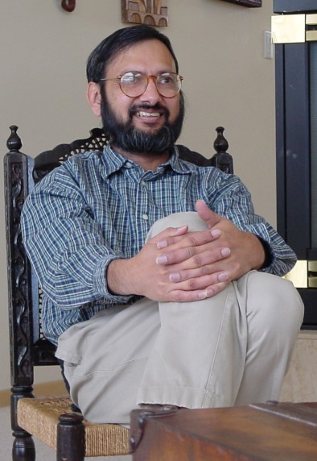

Arvind Caprihan
Ph.D., Electrical Engineering, Rice (1971), taught at COPPE/UFRJ in Brazil for 10 years before coming to Lovelace. He started the Lovelace NMR program in 1983 and performs fundamental studies on flowing fluids for which he has a patent. He also has expertise in granular flows, signal processing, computing, and theory of diffusion. He serves on NIH study sections (NHLBI and SBIR), reviews manuscripts for Magn. Reson. Med., IEEE Med. Imaging, and IEEE Biomed. Engineering, and is Adjunct Professor of Electrical Engineering at University of New Mexico.
